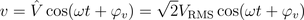
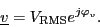
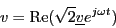
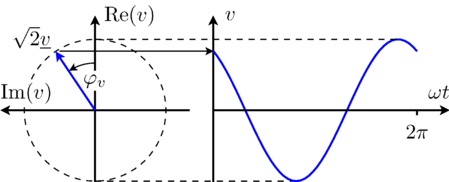

IntroductionIntroduction to phasors |
|
Information
This information is part of the Modelica Standard Library maintained by the Modelica Association.
The purely sinusoidal voltage

in the time domain can be represented by a complex rms phasor

For these quasi stationary phasor the following relationship applies:

This equation is also illustrated in Fig. 1.
|  |
From the above equation it is obvious that for t = 0 the time domain voltage is v = cos(φv). The complex representation of the phasor corresponds with this instance, too, since the phasor is leading the real axis by the angle φv.
The explanation given for sinusoidal voltages can certainly also be applied to sinusoidal currents.